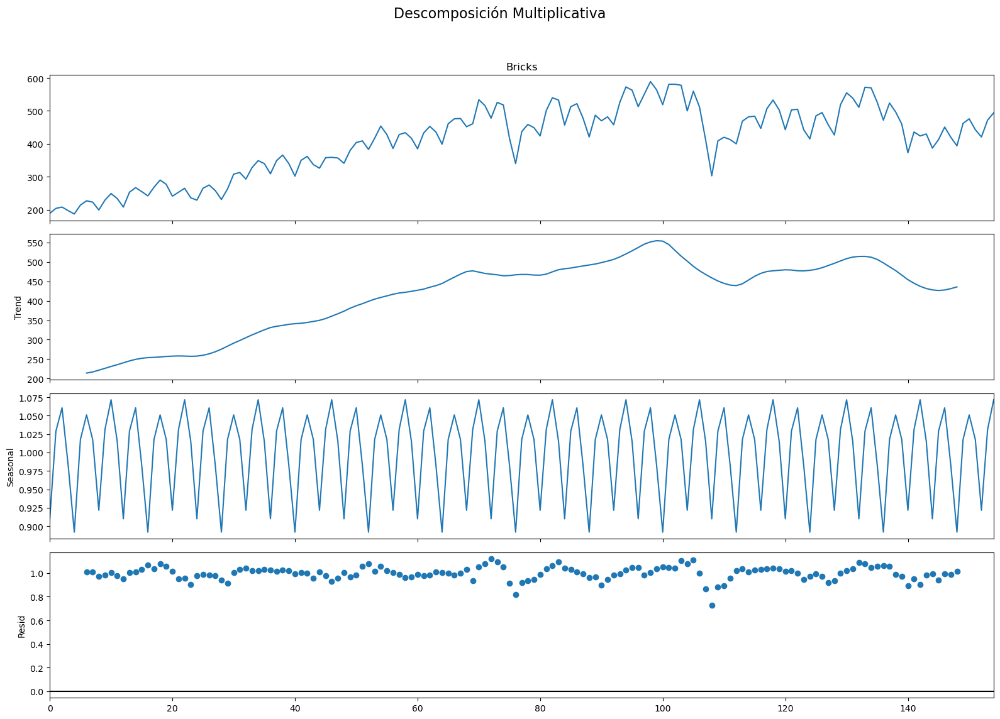
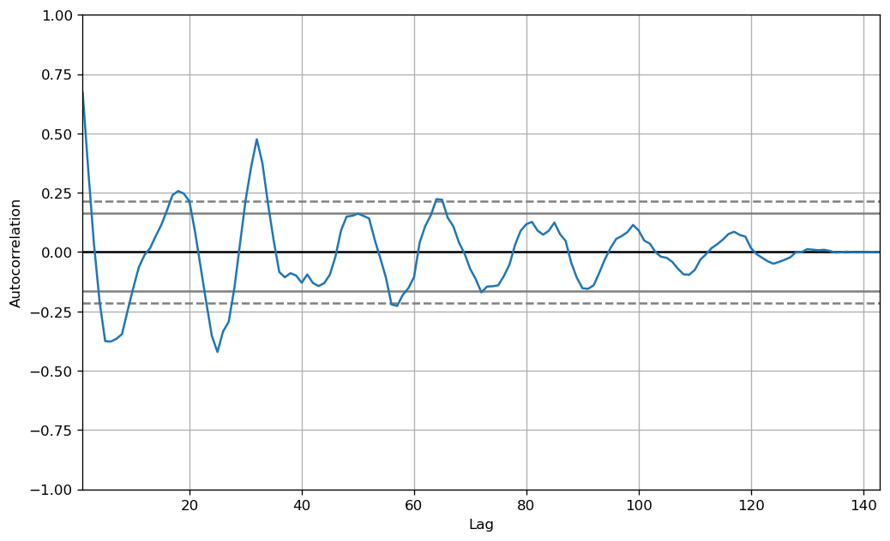

![]()
import numpy as np # Libreria Matematica basica
import pandas as pd # Libreria para manejo, manipulacion y visualizacion de datos
from pandas import read_excel # funcion para leer archivos de excel
import matplotlib as mpl # Libreria para visualizacion de datos y graficas
import matplotlib.pyplot as plt # Funcion para graficar
import seaborn as sns # Libreria para visualizacion de datosTaller - Series de Tiempo y Python IIE - UNAM
Abstract
Este Notebook incluye una introduccion al manejo de Series de Tiempo con Python
Keywords
Series de Tiempo, ARIMA, Python, R, Estadistica
Librerías y Configuración de entorno
Introducción - Manejo de Datos (Básico)
En esta parte vamos introducir el manejo básico de archivos de texto que pueden contener información asociada a una serie de tiempos, para ello primero instalamos los requerimientos de software.
path = 'AirPassengers.csv' # Directorio en el que se encuentra el documento
df = pd.read_csv(path)
df.tail()| Month | #Passengers | |
|---|---|---|
| 139 | 1960-08 | 606 |
| 140 | 1960-09 | 508 |
| 141 | 1960-10 | 461 |
| 142 | 1960-11 | 390 |
| 143 | 1960-12 | 432 |
De manera similar podemos abrir un archivo tipo .xls y con ello tenemos los 2 archivos mas comunes y básicos de los cuales podemos obtener datos
Nota: En entornos más avanzados es necesario gestionar provenientes de bases de datos, lo cual escapa de las fronteras abarcadas por este curso.
# !conda install xlrd -y # Libreria necesaria para poder abrir xls.
#!pip install xlrd -y # Libreria necesaria para poder abrir xls.
df1 = read_excel('AirlineSales.xls')
df1.head()| Dates | Observations | |
|---|---|---|
| 0 | 1971-01-01 | 112 |
| 1 | 1971-02-01 | 118 |
| 2 | 1971-03-01 | 132 |
| 3 | 1971-04-01 | 129 |
| 4 | 1971-05-01 | 121 |
#! conda install openpyxl -y
ejemplo2 = read_excel('ClayBricks.xls')
ejemplo3 = read_excel('Electricity.xls')
ejemplo4 = read_excel('MilkProduction.xls')
ejemplo5 = read_excel('JapaneseCars.xls')
ejemplo6 = read_excel('HouseSales.xls')Edicion de datos y Graficas con Pandas
Ahora editemos un par datos de nuestros “Data Frames”
df.columns = ['Fechas','Numero de Pasajeros']
df.head()| Fechas | Numero de Pasajeros | |
|---|---|---|
| 0 | 1949-01 | 112 |
| 1 | 1949-02 | 118 |
| 2 | 1949-03 | 132 |
| 3 | 1949-04 | 129 |
| 4 | 1949-05 | 121 |
df1.columns = ['Fechas','Numero de Pasajeros']
df1.tail()| Fechas | Numero de Pasajeros | |
|---|---|---|
| 91 | 1978-08-01 | 405 |
| 92 | 1978-09-01 | 355 |
| 93 | 1978-10-01 | 306 |
| 94 | 1978-11-01 | 271 |
| 95 | 1978-12-01 | 306 |
A continuacion vemos que de manera muy sencilla podemos graficar nuestras series de tiempo solamente usando la libreria de Pandas y MatPlotLib cuyo resultado a constinuacion es simple y con poco formato.
df.plot()
plt.show()df1["Numero de Pasajeros"].plot()
plt.show()Para tener una mejor presentacion de los datos vamos a definimos una funcion para graficar nuestros Data Frames/ Series de tiempo.
def plot_df(df, x, y, title="", xlabel='Fecha', ylabel='Numero de Pasajeros', colores="", dpi=100):
plt.figure(figsize=(15,4), dpi=dpi)
plt.plot(x, y, color=colores)
plt.gca().set(title=title, xlabel=xlabel, ylabel=ylabel)
plt.show()plot_df(df, x=df['Fechas'], y=df['Numero de Pasajeros'], title='Tendencia y Temporalidad', colores="blue")Para el segundo Data Frame
plot_df(df1, x=df1['Fechas'], y=df1['Numero de Pasajeros'], title='Tendencia y Temporalidad', colores="green")Graficas de Ejemplos
plot_df(ejemplo2, x=ejemplo2['Dates'], y=ejemplo2['Bricks'],ylabel="Ladrillos", title='Tendencia y Temporalidad', colores="red")plot_df(ejemplo3, x=ejemplo3['Month and year'], y=ejemplo3['Kwh'],ylabel="KiloWatts Hora" ,title='Tendencia y Temporalidad', colores="cyan")Manejo de Archivos R y Graficas
Ahora vamos a ver como abrir archivos con datos asociados a ST en R, para ello instalamos la siguente libreria en Python o en su defecto trabajar directamente con R Studio o agun FrameWork para R.
#!pip install rpy2
%load_ext rpy2.ipythonInstalamos e importamos liberias de R que necesitaremos
from rpy2.robjects.packages import importr, data
utils = importr('utils')
base = importr('base')
#utils.install_packages('stats')
#utils.install_packages('lme4')
#utils.install_packages("ggplot2")
#utils.install_packages("tseries")
#utils.install_packages("fable")
#utils.install_packages("tsibble")
#utils.install_packages("dplyr")
#utils.install_packages("lubridate")
#utils.install_packages("feasts")
# library(fable) # en un entorno nativo de R se cargan las liberias asi.
#feasts = importr("feasts")
lubridate = importr("lubridate")
dplyr = importr("dplyr")
#tsibble = importr("tsibble")
#fable = importr("fable")
#tseries= importr("tseries")
stats = importr('stats')
#lme4 = importr('lme4')
#ggplot2 = importr("ggplot2")%%R
airline <- read.csv('AirPassengers.csv')
head(airline) Month X.Passengers
1 1949-01 112
2 1949-02 118
3 1949-03 132
4 1949-04 129
5 1949-05 121
6 1949-06 135%%R
airline_TS <- ts(airline$X.Passengers,frequency = 12, start = c(1949, 1))
airline_TS Jan Feb Mar Apr May Jun Jul Aug Sep Oct Nov Dec
1949 112 118 132 129 121 135 148 148 136 119 104 118
1950 115 126 141 135 125 149 170 170 158 133 114 140
1951 145 150 178 163 172 178 199 199 184 162 146 166
1952 171 180 193 181 183 218 230 242 209 191 172 194
1953 196 196 236 235 229 243 264 272 237 211 180 201
1954 204 188 235 227 234 264 302 293 259 229 203 229
1955 242 233 267 269 270 315 364 347 312 274 237 278
1956 284 277 317 313 318 374 413 405 355 306 271 306
1957 315 301 356 348 355 422 465 467 404 347 305 336
1958 340 318 362 348 363 435 491 505 404 359 310 337
1959 360 342 406 396 420 472 548 559 463 407 362 405
1960 417 391 419 461 472 535 622 606 508 461 390 432%%R
plot(airline_TS,type='o',ylab='Numero de Pasajeros',main='Serie de Tiempos Aerolinea')Descomposición de Series de Tiempo
En esta parte vamos a ver código que nos genera automáticamente una descomposición de las series temporales que tengamos a nuestra disposición. Lo primero que vamos a hacer es importar la librería statsmodels cuyas rutinas nos serán útiles para modelar ST.
#! conda install statsmodels -y
from statsmodels.tsa.seasonal import seasonal_decomposeSabemos que una serie temporal se puede descomponer considerando lo siguiente \(X_t =f(T_t,S_t,N_t)\). Los modelos más sencillos consisten en consideran una función aditiva \(X_t =T_t+S_t+N_t\) o multiplicativa $S_t =T_t S_t N_t $, cuyos ejemplos prácticos e implementados automáticamente los encontramos en los siguientes códigos.
Tendencias
existen multiples estrategias para estimar la tendencia de una serie de tiempo, cada una es adaptable dependiendop del tipo de serie que se tenga y el fenomeno que se intenta modelar. Las estrategias mas comunes son las siguientes:
- Calcular la media de los datos.
- Usar algun modelo de regresion.
- Calcular medias moviles dependiendo de patrones estacionales.
A continuacion vemos como hacer estos calculos para la TS del ejemplo 2 y 3.
ejemplo2["Bricks"].mean()np.float64(408.7935483870968)ejemplo3["Kwh"].mean()np.float64(6903.0672268907565)Medias Moviles
Para calcular medias moviles con Pandas
ma_eje1 = ejemplo2["Bricks"].rolling(6).mean()
std_ma_eje1 = ejemplo2["Bricks"].rolling(6).std()Definimos una funcion para graficar la media movil
def plot_ts2(df, x, y, title="", xlabel='Fecha', ylabel='Numero de Pasajeros', colores="", dpi=100,MA=6):
ma= y.rolling(MA).mean()
std_ma=y.rolling(MA).std()
plt.figure(figsize=(15,4), dpi=dpi)
plt.plot(x, ma+std_ma, color="cyan")
plt.plot(x, ma-std_ma, color="cyan")
plt.fill_between(x, y1=ma+std_ma, y2=ma-std_ma, alpha=0.3, linewidth=2, color='cyan')
plt.plot(x, ma, color="red", label="Media Movil")
plt.plot(x, y, color=colores, label="Original")
plt.gca().set(title=title, xlabel=xlabel, ylabel=ylabel)
plt.legend(loc="best")
plt.show()plot_ts2(ejemplo2, ejemplo2["Dates"],ejemplo2["Bricks"], title="Medias Moviles Ladrillos", xlabel='Fecha', ylabel='Numero de Ladrillos', colores="black",MA=24)Creamos una grafica interactiva variando la ventana para el calculo de la media movil
import ipywidgets as widgets
def graf_ma(l):
w=plot_ts2(ejemplo2, ejemplo2["Dates"],ejemplo2["Bricks"], title="Medias Moviles Ladrillos", xlabel='Fecha', ylabel='Numero de Ladrillos', colores="black",MA=l)widgets.interact(graf_ma, l=(2,24))<function __main__.graf_ma(l)>Usando R
%%R
BricksTS Jan Feb Mar Apr May Jun Jul Aug Sep Oct Nov Dec
1946 189 204 208 197 187 214 227 223 199 229
1947 249 234 208 253 267 255 242 268 290 277 241 253
1948 265 236 229 265 275 258 231 263 308 313 293 328
1949 349 340 309 349 366 340 302 350 362 337 326 358
1950 359 357 341 380 404 409 383 417 454 428 386 428
1951 434 417 385 433 453 436 399 461 476 477 452 461
1952 534 516 478 526 518 417 340 437 459 449 424 501
1953 540 533 457 513 522 478 421 487 470 482 458 526
1954 573 563 513 551 589 564 519 581 581 578 500 560
1955 512 412 303 409 420 413 400 469 482 484 447 507
1956 533 503 443 503 505 443 415 485 495 458 427 519
1957 555 539 511 572 570 526 472 524 497 460 373 436
1958 424 430 387 413 451 420 394 462 476 443 421 472
1959 494 Descomposicion con Paquetes de Software
Hacemos la descomposicion de la serie de tiempos de pasajeros de aerolinea.
# Multiplicative Decomposition
multiplicative_decomposition = seasonal_decompose(df['Numero de Pasajeros'], model='multiplicative', period=12)
# Additive Decomposition
additive_decomposition = seasonal_decompose(df['Numero de Pasajeros'], model='additive', period=12)
# Plot
plt.rcParams.update({'figure.figsize': (16,12)})
multiplicative_decomposition.plot().suptitle('Descomposición Multiplicativa', fontsize=16)
plt.tight_layout(rect=[0, 0.03, 1, 0.95])
additive_decomposition.plot().suptitle('Descomposición Aditiva', fontsize=16)
plt.tight_layout(rect=[0, 0.03, 1, 0.95])
plt.show()
Hacemos descomposicion de la serie de tiempo de ladrillos
# Multiplicative Decomposition
multiplicative_decomposition2 = seasonal_decompose(ejemplo2['Bricks'], model='multiplicative', period=12)
# Additive Decomposition
additive_decomposition2 = seasonal_decompose(ejemplo2['Bricks'], model='additive', period=12)
# Plot
plt.rcParams.update({'figure.figsize': (16,12)})
multiplicative_decomposition2.plot().suptitle('Descomposición Multiplicativa', fontsize=16)
plt.tight_layout(rect=[0, 0.03, 1, 0.95])
additive_decomposition2.plot().suptitle('Descomposición Aditiva', fontsize=16)
plt.tight_layout(rect=[0, 0.03, 1, 0.95])
plt.show()
Descomposicion de la serie de consumo de energia
# Multiplicative Decomposition
multiplicative_decomposition3 = seasonal_decompose(ejemplo3['Kwh'], model='multiplicative', period=12)
# Additive Decomposition
additive_decomposition3 = seasonal_decompose(ejemplo3['Kwh'], model='additive', period=12)
# Plot
plt.rcParams.update({'figure.figsize': (16,12)})
multiplicative_decomposition3.plot().suptitle('Descomposición Multiplicativa', fontsize=16)
plt.tight_layout(rect=[0, 0.03, 1, 0.95])
additive_decomposition3.plot().suptitle('Descomposición Aditiva', fontsize=16)
plt.tight_layout(rect=[0, 0.03, 1, 0.95])
plt.show()
Descomposicion en R
#utils.install_packages("readxl")
#utils.install_packages("TSstudio")
#TSstudio = importr("TSstudio")
readxl = importr("readxl")%%R
# Abrimos los archivos .xls
Bricks <- read_excel('ClayBricks.xls')
Electricity <- read_excel('Electricity.xls')
# Construimos la TS
BricksTS <- ts(Bricks$Bricks,frequency = 12, start = c(1946, 3))
ElectricityTS <- ts(Electricity$Kwh,frequency = 12, start = c(1956, 1))
#plot.ts(BricksTS)
plot.ts(ElectricityTS)
#ts_decompose(BricksTS, type = "both")
Bricks# A tibble: 155 × 2
Dates Bricks
<dttm> <dbl>
1 1956-03-01 00:00:00 189
2 1956-04-01 00:00:00 204
3 1956-05-01 00:00:00 208
4 1956-06-01 00:00:00 197
5 1956-07-01 00:00:00 187
6 1956-08-01 00:00:00 214
7 1956-09-01 00:00:00 227
8 1956-10-01 00:00:00 223
9 1956-11-01 00:00:00 199
10 1956-12-01 00:00:00 229
# ℹ 145 more rows
# ℹ Use `print(n = ...)` to see more rowsAdemás: Hubo 22 avisos (use warnings() para verlos)%%R
BricksTS Jan Feb Mar Apr May Jun Jul Aug Sep Oct Nov Dec
1946 189 204 208 197 187 214 227 223 199 229
1947 249 234 208 253 267 255 242 268 290 277 241 253
1948 265 236 229 265 275 258 231 263 308 313 293 328
1949 349 340 309 349 366 340 302 350 362 337 326 358
1950 359 357 341 380 404 409 383 417 454 428 386 428
1951 434 417 385 433 453 436 399 461 476 477 452 461
1952 534 516 478 526 518 417 340 437 459 449 424 501
1953 540 533 457 513 522 478 421 487 470 482 458 526
1954 573 563 513 551 589 564 519 581 581 578 500 560
1955 512 412 303 409 420 413 400 469 482 484 447 507
1956 533 503 443 503 505 443 415 485 495 458 427 519
1957 555 539 511 572 570 526 472 524 497 460 373 436
1958 424 430 387 413 451 420 394 462 476 443 421 472
1959 494 %%R
BricksTS_Da <- decompose(BricksTS)
BricksTS_Da$x
Jan Feb Mar Apr May Jun Jul Aug Sep Oct Nov Dec
1946 189 204 208 197 187 214 227 223 199 229
1947 249 234 208 253 267 255 242 268 290 277 241 253
1948 265 236 229 265 275 258 231 263 308 313 293 328
1949 349 340 309 349 366 340 302 350 362 337 326 358
1950 359 357 341 380 404 409 383 417 454 428 386 428
1951 434 417 385 433 453 436 399 461 476 477 452 461
1952 534 516 478 526 518 417 340 437 459 449 424 501
1953 540 533 457 513 522 478 421 487 470 482 458 526
1954 573 563 513 551 589 564 519 581 581 578 500 560
1955 512 412 303 409 420 413 400 469 482 484 447 507
1956 533 503 443 503 505 443 415 485 495 458 427 519
1957 555 539 511 572 570 526 472 524 497 460 373 436
1958 424 430 387 413 451 420 394 462 476 443 421 472
1959 494
$seasonal
Jan Feb Mar Apr May Jun
1946 -36.037800 12.583728 25.465672 -7.898911
1947 30.851089 8.687895 -36.037800 12.583728 25.465672 -7.898911
1948 30.851089 8.687895 -36.037800 12.583728 25.465672 -7.898911
1949 30.851089 8.687895 -36.037800 12.583728 25.465672 -7.898911
1950 30.851089 8.687895 -36.037800 12.583728 25.465672 -7.898911
1951 30.851089 8.687895 -36.037800 12.583728 25.465672 -7.898911
1952 30.851089 8.687895 -36.037800 12.583728 25.465672 -7.898911
1953 30.851089 8.687895 -36.037800 12.583728 25.465672 -7.898911
1954 30.851089 8.687895 -36.037800 12.583728 25.465672 -7.898911
1955 30.851089 8.687895 -36.037800 12.583728 25.465672 -7.898911
1956 30.851089 8.687895 -36.037800 12.583728 25.465672 -7.898911
1957 30.851089 8.687895 -36.037800 12.583728 25.465672 -7.898911
1958 30.851089 8.687895 -36.037800 12.583728 25.465672 -7.898911
1959 30.851089
Jul Aug Sep Oct Nov Dec
1946 -46.343355 7.992188 18.111506 5.448311 -32.787800 13.927478
1947 -46.343355 7.992188 18.111506 5.448311 -32.787800 13.927478
1948 -46.343355 7.992188 18.111506 5.448311 -32.787800 13.927478
1949 -46.343355 7.992188 18.111506 5.448311 -32.787800 13.927478
1950 -46.343355 7.992188 18.111506 5.448311 -32.787800 13.927478
1951 -46.343355 7.992188 18.111506 5.448311 -32.787800 13.927478
1952 -46.343355 7.992188 18.111506 5.448311 -32.787800 13.927478
1953 -46.343355 7.992188 18.111506 5.448311 -32.787800 13.927478
1954 -46.343355 7.992188 18.111506 5.448311 -32.787800 13.927478
1955 -46.343355 7.992188 18.111506 5.448311 -32.787800 13.927478
1956 -46.343355 7.992188 18.111506 5.448311 -32.787800 13.927478
1957 -46.343355 7.992188 18.111506 5.448311 -32.787800 13.927478
1958 -46.343355 7.992188 18.111506 5.448311 -32.787800 13.927478
1959
$trend
Jan Feb Mar Apr May Jun Jul Aug
1946 NA NA NA NA NA NA
1947 231.0417 235.5833 240.4583 245.3333 249.3333 252.0833 253.7500 254.5000
1948 257.7917 257.1250 257.6667 259.9167 263.5833 268.8750 275.5000 283.3333
1949 318.7083 325.2917 331.1667 334.4167 336.7917 339.4167 341.0833 342.2083
1950 360.4583 366.6250 373.2500 380.8750 387.1667 392.5833 398.6250 404.2500
1951 421.8333 424.3333 427.0833 430.0417 434.8333 438.9583 444.5000 452.7917
1952 473.7917 470.3333 468.6250 466.7500 464.4167 464.9167 466.8333 467.7917
1953 474.4583 479.9167 482.4583 484.2917 487.0833 489.5417 491.9583 494.5833
1954 520.5000 528.5000 537.0417 545.6667 551.4167 554.5833 553.4583 544.6250
1955 477.3750 467.7500 458.9583 450.9167 444.7917 440.3750 439.0417 443.7083
1956 477.2083 478.5000 479.7083 479.1667 477.2500 476.9167 478.3333 480.7500
1957 508.3750 512.3750 514.0833 514.2500 512.0833 506.3750 497.4583 487.4583
1958 437.3333 431.5000 428.0417 426.4583 427.7500 431.2500 435.6667 NA
1959 NA
Sep Oct Nov Dec
1946 214.1250 216.9583 221.4583 226.3333
1947 255.4583 256.8333 257.6667 258.1250
1948 291.0000 297.8333 305.1250 312.3333
1949 344.2500 346.8750 349.7500 354.2083
1950 408.5833 412.6250 416.8750 420.0417
1951 460.7917 468.5417 475.1250 477.0417
1952 467.6250 466.2083 465.8333 468.5417
1953 498.1667 502.0833 506.4583 512.8333
1954 529.5833 514.9167 501.9583 488.6250
1955 453.3333 463.0833 470.5417 475.3333
1956 485.0833 490.7917 496.3750 502.5417
1957 477.7500 465.9583 454.3750 445.0000
1958 NA NA NA NA
1959
$random
Jan Feb Mar Apr May
1946 NA NA NA
1947 -12.8927557 -10.2712279 3.5794665 -4.9170612 -7.7990057
1948 -23.6427557 -29.8128946 7.3711332 -7.5003946 -14.0490057
1949 -0.5594223 6.0204388 13.8711332 1.9996054 3.7426610
1950 -32.3094223 -18.3128946 3.7877999 -13.4587279 -8.6323390
1951 -18.6844223 -16.0212279 -6.0455335 -9.6253946 -7.2990057
1952 29.3572443 36.9787721 45.4127999 46.6662721 28.1176610
1953 34.6905777 44.3954388 10.5794665 16.1246054 9.4509943
1954 21.6489110 25.8121054 11.9961332 -7.2503946 12.1176610
1955 3.7739110 -64.4378946 -119.9205335 -54.5003946 -50.2573390
1956 24.9405777 15.8121054 -0.6705335 11.2496054 2.2843277
1957 15.7739110 17.9371054 32.9544665 45.1662721 32.4509943
1958 -44.1844223 -10.1878946 -5.0038668 -26.0420612 -2.2156723
1959 NA
Jun Jul Aug Sep Oct
1946 NA NA NA -5.2365057 0.5933554
1947 10.8155777 34.5933554 5.5078125 16.4301610 14.7183554
1948 -2.9760890 1.8433554 -28.3255208 -1.1115057 9.7183554
1949 8.4822443 7.2600221 -0.2005208 -0.3615057 -15.3233112
1950 24.3155777 30.7183554 4.7578125 27.3051610 9.9266888
1951 4.9405777 0.8433554 0.2161458 -2.9031723 3.0100221
1952 -40.0177557 -80.4899779 -38.7838542 -26.7365057 -22.6566446
1953 -3.6427557 -24.6149779 -15.5755208 -46.2781723 -25.5316446
1954 17.3155777 11.8850221 28.3828125 33.3051610 57.6350221
1955 -19.4760890 7.3016888 17.2994792 10.5551610 15.4683554
1956 -26.0177557 -16.9899779 -3.7421875 -8.1948390 -38.2399779
1957 27.5239110 20.8850221 28.5494792 1.1384943 -11.4066446
1958 -3.3510890 4.6766888 NA NA NA
1959
Nov Dec
1946 10.3294665 -11.2608112
1947 16.1211332 -19.0524779
1948 20.6627999 1.7391888
1949 9.0377999 -10.1358112
1950 1.9127999 -5.9691446
1951 9.6627999 -29.9691446
1952 -9.0455335 18.5308554
1953 -15.6705335 -0.7608112
1954 30.8294665 57.4475221
1955 9.2461332 17.7391888
1956 -36.5872001 2.5308554
1957 -48.5872001 -22.9274779
1958 NA NA
1959
$figure
[1] -36.037800 12.583728 25.465672 -7.898911 -46.343355 7.992188
[7] 18.111506 5.448311 -32.787800 13.927478 30.851089 8.687895
$type
[1] "additive"
attr(,"class")
[1] "decomposed.ts"%%R
plot(BricksTS_Da)%%R
BricksTS_Dm <- decompose(BricksTS,type = "multiplicative")
BricksTS_Dm$x
Jan Feb Mar Apr May Jun Jul Aug Sep Oct Nov Dec
1946 189 204 208 197 187 214 227 223 199 229
1947 249 234 208 253 267 255 242 268 290 277 241 253
1948 265 236 229 265 275 258 231 263 308 313 293 328
1949 349 340 309 349 366 340 302 350 362 337 326 358
1950 359 357 341 380 404 409 383 417 454 428 386 428
1951 434 417 385 433 453 436 399 461 476 477 452 461
1952 534 516 478 526 518 417 340 437 459 449 424 501
1953 540 533 457 513 522 478 421 487 470 482 458 526
1954 573 563 513 551 589 564 519 581 581 578 500 560
1955 512 412 303 409 420 413 400 469 482 484 447 507
1956 533 503 443 503 505 443 415 485 495 458 427 519
1957 555 539 511 572 570 526 472 524 497 460 373 436
1958 424 430 387 413 451 420 394 462 476 443 421 472
1959 494
$seasonal
Jan Feb Mar Apr May Jun Jul
1946 0.9100034 1.0290191 1.0606193 0.9827213 0.8919431
1947 1.0715541 1.0151491 0.9100034 1.0290191 1.0606193 0.9827213 0.8919431
1948 1.0715541 1.0151491 0.9100034 1.0290191 1.0606193 0.9827213 0.8919431
1949 1.0715541 1.0151491 0.9100034 1.0290191 1.0606193 0.9827213 0.8919431
1950 1.0715541 1.0151491 0.9100034 1.0290191 1.0606193 0.9827213 0.8919431
1951 1.0715541 1.0151491 0.9100034 1.0290191 1.0606193 0.9827213 0.8919431
1952 1.0715541 1.0151491 0.9100034 1.0290191 1.0606193 0.9827213 0.8919431
1953 1.0715541 1.0151491 0.9100034 1.0290191 1.0606193 0.9827213 0.8919431
1954 1.0715541 1.0151491 0.9100034 1.0290191 1.0606193 0.9827213 0.8919431
1955 1.0715541 1.0151491 0.9100034 1.0290191 1.0606193 0.9827213 0.8919431
1956 1.0715541 1.0151491 0.9100034 1.0290191 1.0606193 0.9827213 0.8919431
1957 1.0715541 1.0151491 0.9100034 1.0290191 1.0606193 0.9827213 0.8919431
1958 1.0715541 1.0151491 0.9100034 1.0290191 1.0606193 0.9827213 0.8919431
1959 1.0715541
Aug Sep Oct Nov Dec
1946 1.0176729 1.0509676 1.0175704 0.9216109 1.0311689
1947 1.0176729 1.0509676 1.0175704 0.9216109 1.0311689
1948 1.0176729 1.0509676 1.0175704 0.9216109 1.0311689
1949 1.0176729 1.0509676 1.0175704 0.9216109 1.0311689
1950 1.0176729 1.0509676 1.0175704 0.9216109 1.0311689
1951 1.0176729 1.0509676 1.0175704 0.9216109 1.0311689
1952 1.0176729 1.0509676 1.0175704 0.9216109 1.0311689
1953 1.0176729 1.0509676 1.0175704 0.9216109 1.0311689
1954 1.0176729 1.0509676 1.0175704 0.9216109 1.0311689
1955 1.0176729 1.0509676 1.0175704 0.9216109 1.0311689
1956 1.0176729 1.0509676 1.0175704 0.9216109 1.0311689
1957 1.0176729 1.0509676 1.0175704 0.9216109 1.0311689
1958 1.0176729 1.0509676 1.0175704 0.9216109 1.0311689
1959
$trend
Jan Feb Mar Apr May Jun Jul Aug
1946 NA NA NA NA NA NA
1947 231.0417 235.5833 240.4583 245.3333 249.3333 252.0833 253.7500 254.5000
1948 257.7917 257.1250 257.6667 259.9167 263.5833 268.8750 275.5000 283.3333
1949 318.7083 325.2917 331.1667 334.4167 336.7917 339.4167 341.0833 342.2083
1950 360.4583 366.6250 373.2500 380.8750 387.1667 392.5833 398.6250 404.2500
1951 421.8333 424.3333 427.0833 430.0417 434.8333 438.9583 444.5000 452.7917
1952 473.7917 470.3333 468.6250 466.7500 464.4167 464.9167 466.8333 467.7917
1953 474.4583 479.9167 482.4583 484.2917 487.0833 489.5417 491.9583 494.5833
1954 520.5000 528.5000 537.0417 545.6667 551.4167 554.5833 553.4583 544.6250
1955 477.3750 467.7500 458.9583 450.9167 444.7917 440.3750 439.0417 443.7083
1956 477.2083 478.5000 479.7083 479.1667 477.2500 476.9167 478.3333 480.7500
1957 508.3750 512.3750 514.0833 514.2500 512.0833 506.3750 497.4583 487.4583
1958 437.3333 431.5000 428.0417 426.4583 427.7500 431.2500 435.6667 NA
1959 NA
Sep Oct Nov Dec
1946 214.1250 216.9583 221.4583 226.3333
1947 255.4583 256.8333 257.6667 258.1250
1948 291.0000 297.8333 305.1250 312.3333
1949 344.2500 346.8750 349.7500 354.2083
1950 408.5833 412.6250 416.8750 420.0417
1951 460.7917 468.5417 475.1250 477.0417
1952 467.6250 466.2083 465.8333 468.5417
1953 498.1667 502.0833 506.4583 512.8333
1954 529.5833 514.9167 501.9583 488.6250
1955 453.3333 463.0833 470.5417 475.3333
1956 485.0833 490.7917 496.3750 502.5417
1957 477.7500 465.9583 454.3750 445.0000
1958 NA NA NA NA
1959
$random
Jan Feb Mar Apr May Jun Jul
1946 NA NA NA NA NA
1947 1.0057614 0.9784564 0.9505620 1.0021680 1.0096513 1.0293562 1.0692326
1948 0.9593187 0.9041445 0.9766393 0.9908053 0.9836831 0.9764250 0.9400550
1949 1.0219224 1.0296180 1.0253422 1.0141778 1.0246139 1.0193313 0.9926801
1950 0.9294484 0.9592158 1.0039487 0.9695667 0.9838387 1.0601348 1.0772019
1951 0.9601404 0.9680529 0.9906154 0.9784845 0.9822360 1.0107245 1.0063846
1952 1.0518159 1.0807223 1.1208807 1.0951611 1.0516287 0.9127053 0.8165446
1953 1.0621396 1.0940358 1.0409104 1.0294066 1.0104334 0.9935915 0.9594374
1954 1.0273533 1.0493819 1.0497028 0.9812976 1.0071076 1.0348607 1.0513451
1955 1.0009127 0.8676680 0.7254815 0.8814620 0.8902933 0.9543266 1.0214500
1956 1.0423297 1.0355145 1.0148069 1.0201357 0.9976677 0.9452155 0.9727031
1957 1.0188135 1.0362654 1.0923060 1.0809318 1.0494813 1.0570198 1.0637710
1958 0.9047721 0.9816526 0.9935320 0.9411309 0.9940930 0.9910369 1.0139225
1959 NA
Aug Sep Oct Nov Dec
1946 NA 1.0087166 1.0100993 0.9750198 0.9811991
1947 1.0347580 1.0801613 1.0598977 1.0148718 0.9505186
1948 0.9121156 1.0070903 1.0327771 1.0419388 1.0184171
1949 1.0050074 1.0005650 0.9547561 1.0113751 0.9801543
1950 1.0136262 1.0572700 1.0193511 1.0046941 0.9881470
1951 1.0004475 0.9829084 1.0004738 1.0322454 0.9371623
1952 0.9179537 0.9339544 0.9464591 0.9876150 1.0369545
1953 0.9675675 0.8977055 0.9434237 0.9812375 0.9946715
1954 1.0482632 1.0438847 1.1031294 1.0808234 1.1114310
1955 1.0386448 1.0116728 1.0271214 1.0307701 1.0343794
1956 0.9913209 0.9709560 0.9170729 0.9334055 1.0015335
1957 1.0562959 0.9898432 0.9701666 0.8907315 0.9501598
1958 NA NA NA NA NA
1959
$figure
[1] 0.9100034 1.0290191 1.0606193 0.9827213 0.8919431 1.0176729 1.0509676
[8] 1.0175704 0.9216109 1.0311689 1.0715541 1.0151491
$type
[1] "multiplicative"
attr(,"class")
[1] "decomposed.ts"%%R
plot(BricksTS_Dm)Referencias
- https://rpubs.com/davoodastaraky/TSA1
- https://www.kaggle.com/code/prashant111/complete-guide-on-time-series-analysis-in-python/notebook
- https://link.springer.com/article/10.1007/s43069-022-00179-z
Segunda Parte ACF y PACF
from pandas.plotting import autocorrelation_plotplt.rcParams.update({'figure.figsize':(10,6), 'figure.dpi':120})
autocorrelation_plot(ejemplo2["Bricks"].tolist())
plt.rcParams.update({'figure.figsize':(10,6), 'figure.dpi':120})
autocorrelation_plot(ejemplo3["Kwh"].tolist())Simulemos un Ruido blanco para poder graficar son ACF
n=100
ruido = np.random.rand(n)
ruido_df=pd.Series(ruido)
plot_df(ruido_df, x=range(n), y=ruido_df, title='Ruido Blanco', colores="blue")autocorrelation_plot(ruido_df)residuos2_1= multiplicative_decomposition2.resid
autocorrelation_plot(residuos2_1.dropna())residuos2_2= additive_decomposition2.resid
autocorrelation_plot(residuos2_2.dropna())
residuos3_1= multiplicative_decomposition3.resid
autocorrelation_plot(residuos3_1.dropna())residuos3_2= additive_decomposition3.resid
autocorrelation_plot(residuos3_2.dropna())Otro paquete que nos permite graficar la ACF y PACF es statsmodels
from statsmodels.tsa.stattools import acf, pacf
from statsmodels.graphics.tsaplots import plot_acf, plot_pacf
# Graficas
fig, axes = plt.subplots(1,2,figsize=(16,3), dpi= 100)
plot_acf(residuos3_2.dropna(), lags=50, ax=axes[0])
plot_pacf(residuos3_2.dropna(), lags=50, ax=axes[1])fig, axes = plt.subplots(1,2,figsize=(16,3), dpi= 100)
plot_acf(ejemplo3["Kwh"].tolist(), lags=50, ax=axes[0])
plot_pacf(ejemplo3["Kwh"].tolist(), lags=50, ax=axes[1])

fig, axes = plt.subplots(1,2,figsize=(16,3), dpi= 100)
plot_acf(ruido, lags=49, ax=axes[0])
plot_pacf(ruido, lags=49, ax=axes[1])
fig, axes = plt.subplots(1,2,figsize=(16,3), dpi= 100)
plot_acf(residuos2_1.dropna(), lags=50, ax=axes[0])
plot_pacf(residuos2_1.dropna(), lags=50, ax=axes[1])
fig, axes = plt.subplots(1,2,figsize=(16,3), dpi= 100)
plot_acf(residuos3_1.dropna(), lags=50, ax=axes[0])
plot_pacf(residuos3_1.dropna(), lags=50, ax=axes[1])
ACF y PACF en R
%%R
acf(BricksTS)
%%R
pacf(BricksTS)Session
import session_info
session_info.show(html=False,excludes=['dplyr','readxl','utils','base','stats','lubridate'])-----
ipywidgets 7.8.5
matplotlib 3.10.6
numpy 2.3.3
pandas 2.3.3
rpy2 NA
seaborn 0.13.2
session_info v1.0.1
statsmodels 0.14.5
-----
IPython 9.6.0
jupyter_client 8.6.3
jupyter_core 5.8.1
jupyterlab 4.4.9
notebook 7.4.7
-----
Python 3.13.5 | packaged by conda-forge | (main, Jun 16 2025, 08:27:50) [GCC 13.3.0]
Linux-6.8.0-85-generic-x86_64-with-glibc2.39
-----
Session information updated at 2025-10-13 04:55Reuse
Citation
BibTeX citation:
@online{e._ascencio_g.,
author = {E. Ascencio G., Luis},
title = {Taller - {Series} de {Tiempo} y {Python} {IIE} - {UNAM}},
volume = {1},
number = {1},
doi = {000000/00000000},
langid = {en},
abstract = {Este Notebook incluye una introduccion al manejo de Series
de Tiempo con Python}
}
For attribution, please cite this work as:
E. Ascencio G., Luis. n.d. “Taller - Series de Tiempo y Python IIE
- UNAM.” CIMAT. https://doi.org/000000/00000000.